Composition Lifecycle and Design Guidance
The lifecycle deliberately separates reproducible input locking, model validation, deterministic planning, runtime mutation, recorded state, and active acceptance evidence. This keeps review and CI read-only while making execution recoverable and auditable.
Validation, planning, and lifecycle

What each command proves
| Command | Proves | Does not prove | Mutates runtime/state |
|---|---|---|---|
|
The exact composition, selected DOT definitions and deployments, Contracts, configuration inputs, and portable resolved plan are content-addressed. |
Runtime availability, credentials, or policy acceptance. |
Writes only the requested lock file; |
|
The strict document shape, references, selected deployments, Anchors, Contracts, compatibility evidence, and materializer declarations resolve. |
The exact runtime actions or live availability. |
No |
|
Everything validated above plus the deterministic instance order, runtime identities, endpoints, Contract standard/format and participant interaction, derived values, security status, and materializers. |
That the planned hosts are reachable or credentials work. |
No |
|
The composition reaches lifecycle preparation and can render supported deployment actions without persisting composition state. |
Successful deployment or application-level traffic. |
No |
|
The supported deployment adapters completed and recoverable state was recorded, subject to rollback behavior. |
End-to-end Contract behavior unless separately probed. |
Yes |
|
The exact current and target locks resolve, the target SemVer increases, and
a deterministic per-instance |
That an application-specific persistent-data migration is safe. |
No |
|
The target revision was applied through a checkpointed transaction and the last-known-good control-plane revision remained available until promotion. |
Reversal of application data writes; stateful mutations are rejected. |
Yes; failures automatically restore the verified previous revision, while
interrupted transactions require |
|
A selected safe OpenAPI operation, GraphQL lifecycle, finite side-effect-free gRPC method, or correlated AsyncAPI MQTT/NATS/Kafka/AMQP message is observable from the composition’s shared Docker network or Kubernetes namespace. GraphQL mutations/subscriptions include mandatory verification or trigger and cleanup. |
Complete application semantics, unsafe or unbounded gRPC, other AsyncAPI protocols, multi-scheme authentication, authorization-policy quality, or unprobed operations. |
Creates and removes an ephemeral probe runner without changing member workloads; writes redacted probe evidence to composition state |
|
Native status for recorded instances, wire/exposure configuration evidence, and the latest recorded active-probe outcomes. |
Current reachability after the probe timestamp, authentication mechanisms not explicitly identified by the evidence, authorization semantics, response bodies, or policy compliance. |
No runtime mutation; reads state while holding the lifecycle lock |
|
Owned instances were destroyed in reverse order and successful cleanup removed composition state. |
Cleanup of resources not owned or recorded by this composition. |
Yes |
Current-source upgrade admission inspects the selected deployment in both the
previous and target revisions, not unrelated deployment alternatives. Compose
YAML/JSON is parsed structurally; Kubernetes persistent volumes, claims,
StatefulSets and non-ephemeral volume sources are refused. Missing, ambiguous
or malformed inputs fail closed. Changed Helm and Vagrant instances are refused
until chart defaults and dynamic Ruby storage can be established safely;
unchanged instances and normal apply/status/destroy remain supported.
This hardening is newer than the published CLI v0.2.5: use the reviewed fixed
source for upgrades until a later release includes it. No control-plane rollback
promises to undo application writes or preserve data in writable container layers.
validate answers is this composition internally resolvable? plan answers
what exactly would be connected and materialized? Keeping both commands
read-only makes them suitable for review and CI.
lock makes those answers reproducible. Its JSON output preserves the original
repository:// and relative references while recording SHA-256 digests for the
composition, every resolved dot.json, every supplied Contract, configuration
inputs, and the portable resolved plan. For an explicit remote repository it
also records the normalized repository identity and exact commit. It never
records secret values, runtime addresses, or checkout-local absolute paths.
Validate, plan, and apply verify an adjacent lock automatically; --locked
additionally requires it, and --lock <path> selects an explicit file. Any
mismatch fails before runtime mutation.
probe deliberately reuses the interaction selected by the wire instead of
introducing health-check fields in an Anchor or DOT. For OpenAPI, it derives the
request from the authoritative operation, accepts only GET, HEAD, and
OPTIONS, and requires one fully bound path. The OAuth 2.0 adapter reuses one
configured RFC 6749
client-credentials binding that satisfies a complete, single-scheme OpenAPI
Security Requirement alternative. It resolves the provider-derived token URL,
client ID, scopes, and client-secret reference at execution time, then requires
a Contract-declared 2xx response from the protected operation. Kubernetes
Secret values remain secretKeyRef references; Docker secrets are supplied
only through the runner environment.
Development builds newer than the published CLI v0.2.5 also accept an
optional native JSON response assertion on safe OpenAPI GET or OPTIONS
wires:
probe:
openapi:
expect: {pointer: /data/status, equals: success}The existing Contract remains authoritative for the operation and declared
status codes. With this fixture, the response must additionally be 2xx, have
application/json or application/*+json content type, and contain valid JSON
whose RFC 6901 pointer equals the non-sensitive expected value. Array indices
are supported; an empty pointer compares the entire document. Redirects are
not followed, execution uses the probe timeout, and runner output is limited
to 1 MiB. Only redacted outcomes and failure codes are recorded, never response
bodies or actual values. This is explicit value checking, not complete OpenAPI
response-schema validation. Without the fixture, existing status-only behavior
is unchanged. The assertion is a lock-covered composition input, not a new DOT
or Anchor property. HEAD cannot carry a JSON body assertion.
For GraphQL, the composition supplies the deployment-specific HTTP path and a
non-sensitive operation document with optional operation name and variables.
Before planning succeeds, dotx parses the authoritative SDL, validates every
document and variable set, requires exactly one direct top-level field, and
requires that field to equal the Anchor-selected coordinate. It never guesses
/graphql. Queries use HTTP directly. Mutations additionally declare an
observable verification query and cleanup mutation. Subscriptions use the
GraphQL-over-SSE protocol on a connection established before a separate trigger
mutation and finish with a cleanup mutation. Every phase must return HTTP 2xx
without GraphQL errors; the expectation is evaluated against the query
response, mutation verification result, or delivered subscription event.
For gRPC, the composition supplies one protobuf-JSON request for unary and
server-streaming methods, or an ordered requests sequence for client and
bidirectional streams. The selected Proto3 RPC must declare the standard
NO_SIDE_EFFECTS idempotency level and be discoverable through explicitly
enabled server reflection. Every streaming fixture declares a positive exact
responseCount; an optional expectation uses ALL, ANY, FIRST, or LAST
matching. Requests are checked against the authoritative input descriptor
before the pinned grpcurl runner starts, then every returned document is
checked against the authoritative output descriptor. Unsafe, unbounded, wrong-
count, or descriptor-incompatible calls fail closed.
For AsyncAPI, the active adapters require a provider send operation, an
explicit MQTT/MQTT5, NATS, Kafka, or AMQP channel binding, one concrete destination,
and a JSON-Schema message payload. The composition declares the message and RFC
6901 correlation pointer; MQTT additionally declares QoS. The Kafka adapter
honors the official binding-level topic override and restricts topics to the
Kafka-supported ASCII alphanumeric, dot, underscore, and hyphen syntax. The
digest-pinned official Mosquitto or NATS client subscribes before publishing a
fresh UUID-correlated non-retained message. Kafka creates a unique consumer
group, waits for its topic assignment before publishing the exact correlated
record through the official Apache Kafka JVM image, and removes the group after
the bounded check. Kafka records remain subject to broker/topic retention and
are never represented as transient. The AMQP 0-9-1 adapter applies the official
0.3.0 channel and operation bindings, declares the exact direct/topic/fanout
exchange, binds an exclusive auto-delete queue before publishing, acknowledges
the correlated delivery, and closes the connection to remove the queue. It
accepts credentials only as a password secret reference. Queue-bound channels,
headers exchanges, AMQPS, AMQP 1.0, a binding/protocol mismatch, or MQTT-only
QoS on NATS/Kafka/AMQP fail closed.
All adapters execute digest-pinned runners inside the common Docker network or Kubernetes namespace. Runner output is capped at 1 MiB before parsing. Secrets and bearer tokens never appear in the argument vector or state. Contractless, unresolved, unsupported-protocol, and cross-platform wires are reported as unsupported rather than inferred healthy. Diagnostics, documents, variables, requests, messages, and response bodies are not persisted; state contains only normalized identifiers, adapter, result metadata, failure code, and timestamp.
The live contract-probe fixture runs a real GraphQL.js producer with distinct
GraphQL-over-SSE connections, a reflected grpc-js server implementing all
four RPC shapes, Eclipse Mosquitto, NATS, Apache Kafka, and RabbitMQ. It demonstrates the full supported
boundary; it does not turn those test services or interaction fixtures into
reusable DOT metadata.
# Composition-level probe input; the DOT and Anchor still contain only the
# authoritative Contract reference and selector Query.health.
probe:
graphql:
path: /graphql
operationName: Health
document: |
query Health {
health
}
expect: {pointer: /data/health, equals: true}# Finite bidirectional gRPC probe. The selected Proto method in the Contract
# declares stream input/output and NO_SIDE_EFFECTS; these fields supply only
# instance-specific test messages and acceptance criteria.
probe:
grpc:
plaintext: true
serverReflection: true
requests:
- {component: contract-provider, count: 1}
- {component: contract-consumer, count: 1}
responseCount: 2
responseMatch: LAST
expect: {pointer: /sequence, equals: 2}# NATS transport delivery. The selected AsyncAPI channel owns the subject,
# NATS binding, message schema, and send/receive semantics.
probe:
asyncapi:
protocol: NATS
correlationPointer: /id
message: {id: replaced-at-runtime, severity: critical}# Kafka retained-stream delivery. The selected AsyncAPI Kafka 0.5.0 channel
# binding owns the physical topic override and the message schema.
probe:
asyncapi:
protocol: KAFKA
correlationPointer: /id
message: {id: replaced-at-runtime, severity: critical}# Emit the canonical strict Draft 2020-12 schema
dotx compose schema > composition-v1.schema.json
# Generate once, commit, and verify without rewriting
dotx compose lock scenario.yaml
dotx compose lock scenario.yaml --check
# Structure, references, selectors, compatibility, and materializer declarations
dotx compose validate scenario.yaml --locked
# Deterministic resolved topology; no runtime mutation
dotx compose plan scenario.yaml --locked
dotx compose plan scenario.yaml --locked --json
# Resolve the catalogue from one immutable remote Git revision
dotx compose plan scenario.yaml --locked --json \
--repository https://github.com/MARE-EU-Project/DOT-Repository.git \
--git-ref <40-character-commit>
# Render runtime actions without state or runtime mutation
dotx compose apply scenario.yaml --locked --dry-run
# Execute, inspect recorded evidence, and clean up owned resources
dotx compose apply scenario.yaml --locked
dotx compose probe scenario.yaml --locked --wire oidc-provider-to-gateway
dotx compose probe scenario.yaml --locked --wire protected-gateway-to-client
dotx compose status scenario.yaml
dotx compose destroy scenario.yaml
# Review and execute a locked upgrade
dotx compose upgrade scenario-v2.yaml \
--from scenario-v1.yaml \
--from-lock scenario-v1.lock.json \
--locked --dry-run --json
dotx compose upgrade scenario-v2.yaml \
--from scenario-v1.yaml \
--from-lock scenario-v1.lock.json \
--lockedApply records each pending instance before runtime mutation, rolls back earlier
instances on failure, and preserves recoverable state when rollback is
incomplete or --keep-on-failure is selected. apply --resume requires an
identical composition source, resolved plan, runtime options, inputs, ordering,
and previously applied runtime state. Resume also reconciles an interrupted
composition-network creation: it reuses the correctly owned network or creates
the still-missing network before continuing. Destroy checkpoints every
successfully removed instance, so a retry targets only cleanup that did not
finish.
Upgrade is a separate lifecycle; apply never mutates an already recorded
plan. Upgrade requires the exact previous and target locks, the same
composition UUID, and a strictly greater target SemVer. Existing instance names
must retain their platform and deployment mechanism. Docker image, Docker
Compose, Kubernetes manifest, Helm, Vagrantfile, and WASM module instances use
their stable managed identities. The private transaction journal stores only
paths, identifiers, phases, and digests—not resolved secrets or input payloads.
Stateful and host-bound mutations fail before the first runtime action because
restoring a deployment specification cannot undo workload data changes.
The deterministic recovery profile injects an interruption immediately before and after network creation, instance deployment, instance destruction, and network removal. It also verifies lock contention, lock release after a panic, partial cleanup, idempotent resume, and fail-closed plan/runtime drift:
task testing:compose:lifecycle-recovery
task testing:compose:upgradeThe task writes revision-pinned, secret-free JSON evidence under
DOT-Testing/e2e/target/ and is enforced by the Composition lifecycle recovery
workflow.
Apply, probe, status, and destroy acquire a private per-composition process lock. A concurrent lifecycle command fails immediately rather than racing local state or runtime mutations.
compose status reports:
-
the recorded phase and native runtime status of each DOT instance;
-
recorded wire compatibility, security configuration, selected endpoint, and materializer count; and
-
recorded exposed-Anchor bindings; and
-
the latest redacted active Contract-probe result for each probed wire.
Wire and exposure entries remain configuration evidence. Only entries under active Contract-probe evidence demonstrate a runtime request and declared OpenAPI response match, bounded by their timestamp and adapter scope.
Fail-closed rules
Apply rejects:
-
UNKNOWNwire compatibility; -
missing, duplicate, or mismatched IDs and versions;
-
ambiguous deployments, bindings, services, ports, or OpenAPI server paths;
-
unresolved OpenAPI paths or AsyncAPI channel templates;
-
undeclared materializer targets and conflicting target values;
-
readiness dependency cycles;
-
unsupported secret-store/runtime combinations;
-
ungranted OCI capabilities, host namespaces, volumes, or CDI devices;
-
repeated DOT instances on deployment mechanisms that cannot isolate their resource names; and
-
materialized cross-platform wires without an explicit network binding.
Planning may retain UNKNOWN to explain incomplete evidence. Execution never
silently upgrades UNKNOWN to compatible.
What does not belong in an Anchor
Do not add these as optional Anchor fields:
-
hosts, URLs, numeric ports, broker addresses, or Kubernetes names;
-
credentials, tokens, certificates, or secret values;
-
Camel/Kamelet route syntax;
-
transformation logic;
-
placement, slice, tenant, trust-zone, latency, or availability policy;
-
current health or live authorization state;
-
host paths or operator device names; or
-
orchestration dependencies.
Use Contracts for interaction semantics, service bindings for deployable ports, composition inputs for operator-controlled configuration, wires for topology, materializers or mediator DOTs for explicit adaptation, and policy engines for deployment/security decisions.
Choosing an extension point
| Requirement | Preferred representation |
|---|---|
New API/message operation |
Add or update the authoritative Contract and select it from an Anchor. |
Consumer needs a provider address |
Wire materializer targeting declared service configuration. |
Payload/protocol transformation |
Explicit mediator DOT with two Contracts and two Anchors. |
Startup/readiness ordering |
Composition |
Secret or certificate |
Reference-only deployment input and platform/external secret provider. |
Privileged runtime resource |
Typed deployment requirement plus exact composition grant. |
Broker service |
Explicit wire |
Network attachment, eBPF/XDP, WASM import/export, or lifecycle event |
Separately reviewed polymorphic binding type when a real use case requires it;
do not grow |
6G security composition patterns
The same model supports security-function composition without baking one orchestrator’s topology language into every DOT:
-
Zero-trust API chain: identity-provider and policy-decision DOTs expose token, discovery, and authorization Anchors; an API gateway consumes them and exposes a protected application Anchor. Contracts carry OAuth/OpenID Connect and application semantics, while the composition supplies client-specific secret references and issuer URLs.
-
Closed-loop detection and response: telemetry, inference, CACAO interpretation, and OpenC2 actuation remain separate DOTs. HTTP and MQTT Contracts define the boundaries; the wire selects the broker endpoint and supplies only deployment-specific channel values.
-
Multi-domain federation: peer DOT instances can have reciprocal wires while
dependsOncontains only real readiness dependencies. Trust-domain, roaming, and federation policy belongs in policy inputs or a dedicated policy DOT, not in the Anchor. -
Near-real-time RAN control: E2 or management APIs are Contract-backed Anchors. Host networking, accelerators, eBPF/XDP attachments, and radio-device access are explicit deployment requirements and grants, never inferred from a wire.
-
Observability and digital twins: metrics, logs, events, and integrity APIs are distinct Anchors. A storage or message broker is selected explicitly as a connection endpoint; a shared host path is not treated as a portable integration boundary.
For cross-domain 6G deployments, a successful plan proves model consistency, not trust. Admission policy must still evaluate publisher identity, artifact provenance, attestation, slice/tenant placement, data-sovereignty constraints, and least-privilege grants before execution. Runtime acceptance should then probe the selected Contract operation over the actual network path.
Troubleshooting
| Symptom | What to check |
|---|---|
Anchor UUID is not found |
The wire references the pinned DOT version, the UUID is stable, and the
Anchor is present in that version’s |
Contract or selector cannot be resolved |
The composition maps the exact Contract UUID to a readable source, the source
document’s |
Anchor has no deployable endpoint |
The selected deployment contains exactly one service binding for the Anchor, and its named port exists on that same service. |
Compatibility is |
Inspect |
Materializer target is rejected |
The target service declares the environment variable or config-file path, the JSON Pointer is valid, and no other wire writes a conflicting value. |
Security remains unresolved |
Bind a Contract-required supported scheme, declare all participant variables,
and supply sensitive values by |
Apply reports the composition is busy |
Another apply, status, or destroy holds the per-composition lock. Let that command finish; do not delete the lock while a lifecycle process is running. |
Status shows a configured wire but no active evidence |
Run |
An OAuth probe reports |
Check the bound token URL and client ID, the referenced Secret name/key or environment-store source, required scopes, issuer reachability, and client authorization. Dotx deliberately does not persist the token endpoint’s body. |
Executable examples
-
DOT-Testing/conformance/anchors/covers all four Contract standards, contractless Anchors, validation failures, bindings, and compatibility. -
DOT-Testing/e2e/api-gateway-oidc/is the canonical authenticated request/response lifecycle example. -
DOT-Testing/composition/poc6-closed-loop/demonstrates an explicit MQTT broker endpoint and OpenC2/AsyncAPI operations. -
DOT-Testing/composition/federation-peers/demonstrates reciprocal wires without false readiness cycles. -
DOT-Testing/e2e/poc1-ric-aaa/demonstrates identity, OPA authorization, forwarding, metrics feedback, and deny-list update across seven wires. -
DOT-Testing/interoperability/pocs.yamlis the evidence ledger for all eleven MARE PoCs and records every remaining acceptance gap.
Run the repository gate with:
task testing:conformanceThe source-adapted E2E tests prove only their documented boundaries. They do not claim partner-runtime, live-RIC, production-network, trust-policy, or SFC acceptance unless that exact behavior is asserted by the scenario.